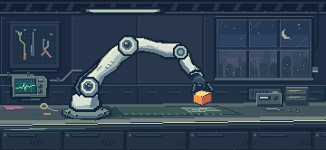

CoRL 2026
Going with the Flow: Koopman Behavioral Models as Pseudo Planners for Visuo-Motor Dexterity
A robot hand predicts how an object should move and replans when the motion it sees diverges from that prediction.
Georgia Tech · Atlanta, GA
Robotics M.S. student
Imitation learning & loco-manipulation
Publications
I’m a master’s student in robotics at Georgia Tech in Atlanta, Georgia. In the STAR Lab, I work with Prof. Harish Ravichandar and my mentor, Ph.D. candidate Yunhai Han. I study imitation learning for dexterous manipulation, especially how robot hands can learn skills from human video. I also work on failure recovery so that a robot can adjust its actions after an unsuccessful attempt.
In the HA Lab, I work with Prof. Sehoon Ha. My main focus there is loco-manipulation, or how robots coordinate moving through their surroundings with handling objects. More broadly, I’m interested in agentic robotics and how robots choose which skill to try next.
Previously, I worked with Prof. Fumin Zhang at the Hong Kong University of Science and Technology (HKUST) on flight control for robotic blimps, including how a swarm can hold formation through a turn. At Beijing Jiaotong University (BJTU), I worked with Prof. Wenjuan Han on how agents with limited sight and hearing coordinate in Minecraft.
CoRL 2026
A robot hand predicts how an object should move and replans when the motion it sees diverges from that prediction.
Preprint 2026
A single video of a person handling an object becomes a demonstration in simulation, then a skill a physical robot hand can perform.

ICRA 2025
A pilot steers one blimp while the others follow using onboard cameras. Switching which blimp leads helps the group hold its formation through sharp turns.

IEEE/ASME AIM 2025
Ultrasonic thrusters let a miniature blimp hover and cruise indoors without spinning propellers. People nearby can guide it with gestures.
Preprint 2024
In a shared Minecraft world, agents with limited sight and hearing must coordinate to find food and gather resources.
Software Engineer Intern · Remote
I built reusable skills for language-model agents in Minecraft and an in-game visualization that let us see what each agent was doing in real time.
In 2026 the team released Open P2P, a game-playing model trained to imitate human players. Behavior cloning paper ↗
 Watch on YouTube ↗
Watch on YouTube ↗